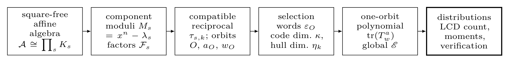

Joint Code-Dimension and k-Galois-Hull Enumerators for Simple-Root Constacyclic Codes over Square-Free Affine Algebras
Introduction — revised version
Reading preview of the rewritten Section 1. Mathematics rendered by MathJax; cross-reference numbers are those of the current build (unchanged by the revision).
What this is. The LaTeX source of the paper is
manuscript/FINAL_SUBMISSION.tex; this page is only a convenient way to read the new Introduction without
compiling. The display formula and the (i)–(iv) list are typeset here as separate blocks for legibility; in the
compiled paper they follow the manuscript layout. Figure 1 is the unchanged TikZ figure, taken from the existing
PDF build.
% Standalone copy of the rewritten Introduction of the manuscript % FINAL_SUBMISSION.tex (Section 1). The TikZ workflow figure that follows % the last paragraph in the manuscript is not repeated here; every label, % citation key and cross-reference is as in the manuscript.
The hull of a linear code \(C\) is the intersection \(C\cap C^{\perp}\) with its dual, and its dimension is a structural invariant of the code. Replacing the Euclidean inner product by a Frobenius-twisted pairing in one argument leads to the \(k\)-Galois inner product and to the \(k\)-Galois hull, of which the Euclidean and Hermitian hulls are the cases \(k=0\) and \(k\) equal to half the degree of the field [1]. For cyclic-type codes the ambient space is a polynomial quotient, so duals, intersections and hence hull dimensions are accessible to factorization arguments [2]. Hull dimensions therefore describe a single code and, at the same time, define a statistic of an entire family; this paper studies the joint distribution of that statistic and the code dimension.
The hull dimension, and not only its vanishing, controls several constructions. The algorithms that test permutation equivalence of two linear codes, and those that compute the automorphism group of a code, become expensive when the hull is large, so the hull dimension measures their complexity [3]. Codes with a trivial hull are the linear codes with complementary duals studied by Massey [4], and they can attain the Gilbert–Varshamov bound [5]. In quantum coding the hull dimension of a classical code determines the number of entangled pairs needed by the corresponding entanglement-assisted quantum error-correcting code [6–7], and the same mechanism is still used to obtain quantum codes from constacyclic codes over rings [8].
The hulls of cyclic and negacyclic codes over finite fields were the first to be described through the factorization of the modulus. Yang and Massey characterized when a cyclic code has a complementary dual [9], Skersys computed the average dimension of the Euclidean hull over the cyclic codes of a fixed length [10], and Sangwisut et al. determined the Euclidean and Hermitian hull dimensions of cyclic and negacyclic codes in closed form and counted the codes realizing each prescribed hull dimension [11]. Constacyclic codes, which contain both families, were studied in the same manner: Jitman and Sangwisut obtained the average dimension of the Hermitian hull of constacyclic codes over fields of square order [12], and Debnath et al. extended the dimension formulas to the \(k\)-Galois pairing for constacyclic codes over finite fields, together with counts of the codes of a prescribed Galois hull dimension under restrictions on the field parameters [13]; a correction appeared in [14]. This line continues with the average Galois hull dimension of constacyclic codes [15] and with the small values a Galois hull dimension can attain [16].
The Galois pairing also made the hull accessible for codes that are not constacyclic. Liu and Pan characterized the Galois hull of an arbitrary linear code over a finite field [17], Cao constructed MDS codes with Galois hulls of prescribed dimensions [18], and Fu and Liu treated Galois self-orthogonal constacyclic codes [19]. More recently, generator descriptions have been derived that avoid passing to the dual code: generator polynomial matrices for the Galois hulls of multi-twisted codes [20], and generator matrices for the intersection of a linear code with its Galois dual [21], the operation that defines the hull.
A separate question is not what the hull of one chosen code is, but how hull dimensions are distributed over a family. For unrestricted linear codes over a finite field, a mass formula gives the number of codes of a fixed length and Euclidean hull dimension [3], and the sequences of these counts as the hull dimension grows have been studied recently [22]. Distributions and asymptotics have also been obtained for double cyclic codes [23] and for double circulant and four circulant codes with small hull dimension [24]. The averages computed in [10], [12] and [15] are the first moments of such distributions and do not determine them.
When the alphabet is a ring rather than a field, the factorization theory changes. The structure theory of cyclic and negacyclic codes over finite chain rings [25] and the Hamming-distance theory over such rings [26] provide the background for the analyses below. Talbi et al. studied the hulls of cyclic serial codes over a finite chain ring [27]; Jitman et al. treated cyclic codes over \(\mathbb{Z}_4\), where the length need not be coprime to the characteristic [28]; and Pathak and Sharma covered the oddly even case, which requires separate arguments [29]. Constacyclic codes over a finite non-chain ring, with applications to quantum codes, were considered in [8]. Closest to the present setting, Debnath et al. studied \(k\)-Galois hulls of constacyclic codes over affine algebra rings, exhibiting generators of the duals and hulls, a hull-dimension formula, LCD criteria and quantum-code applications [30].
Two kinds of results have therefore been obtained: descriptions of the hull of an individual code, and counts or averages of a single statistic of a family. Neither kind determines the joint distribution of the code dimension and the hull dimension, and it is convenient to separate three questions: (i) which hull dimensions occur; (ii) how many codes realize a prescribed hull dimension; and (iii) how many codes realize each pair \((\kappa,\eta)\) formed by a code dimension \(\kappa\) and a hull dimension \(\eta\). Questions (i) and (ii) are answered for cyclic and negacyclic codes in [11] and, over finite fields, for constacyclic codes in [13], where the counts require restrictions on the field parameters, while for unrestricted linear codes with respect to the Euclidean dual, question (iii) is answered by [3] and [22]. Over an affine algebra only question (i) has been answered, by the hull-dimension formula of [30]. Such a formula does not record the code dimensions at which the hull dimensions occur, and a hull-only count cannot be aggregated over the different factor selections into a joint distribution. Answering question (iii) in this setting therefore requires carrying the code dimension along with the hull dimension and treating cycles of the factor permutation that are longer than the fixed points and two-cycles that arise in the Euclidean and Hermitian cases.
Motivated by this gap, we determine in this paper the joint distribution of code dimension and \(k\)-Galois hull dimension for simple-root constacyclic codes over a fixed square-free affine algebra \(\A\) with labeled field components. The counted objects are labeled factor selections, in bijection with the \(\lambda\)-constacyclic codes over \(\A\) (Lemmas 2.5 and 2.6); each is a distinct submodule of the fixed ambient space, and no isometry classes are formed. The output is a bivariate generating polynomial in which the exponents of \(u\) and \(z\) record the code dimension \(\kappa\) and the \(k\)-Galois hull dimension \(\eta_k\), so that its coefficients answer the three questions above simultaneously. The method is to decompose \(\A\) into its field components, to translate \(\lambda\)-constacyclic codes into labeled selections of irreducible factors of the component moduli, and to follow the \(k\)-Galois dual through the Frobenius-twisted reciprocal permutation of those factors. Both statistics are additive over the orbits of this permutation, and this is what makes the enumeration factorize.
The results of the paper are the following. (i) The \(k\)-Galois dual of a component code is generated by the normalized inverse-Frobenius reciprocal of the parity-check polynomial and is constacyclic with twist \(\lambda_s^{-p^{d_s-k}}\) (Theorem 3.5), obtained from the classical Euclidean description of a constacyclic dual (Lemma 3.4) by the coordinatewise inverse Frobenius (Proposition 2.7). (ii) Under the compatibility condition (3.2) the reciprocal permutes the irreducible factors of the component modulus. The hull support of a code is then a cyclic boundary statistic on the orbits of that permutation, and the hull dimension is a weighted count of the resulting \(1\)-to-\(0\) transitions (Theorem 3.10 and Proposition 3.13). (iii) Each orbit contributes a two-state weighted transfer matrix whose trace, the orbit polynomial, also has a closed binomial form (Propositions 4.2–4.4). (iv) The exact labeled joint \((\kappa,\eta)\) enumerator over the CRT product, with orbit weights \(w_O=m_sd_O\), is
(Theorem 4.6), where the sum runs over all \(\lambda\)-constacyclic codes over \(\A\). Items (i)–(iii) assemble established descriptions of component duals and closed-walk counting; the joint enumeration (iv) combines them into one product formula. From it the two marginal distributions, the exact LCD count, and the mean, variance and conditional distribution of the hull dimension follow by specialization (Corollaries 4.7–4.14), while the extension-degree weights \(w_O\) convert component dimensions into dimensions over the common base field.
The enumeration is exact: the coefficients of \(\Epoly(u,z)\) are integers, the conditional moments are reduced rationals, and for \(q=32\), \(n=31\) the orbit recurrence evaluates all \(2^{31}\) labeled factor selections without enumerating them. For the families in characteristics \(2\), \(3\) and \(5\) listed in Section 5.2, every \(k\)-Galois hull dimension computed directly by finite-field linear algebra agrees with the orbit formula, and two published benchmark counts [11] are recovered. The orbit product assumes simple-root moduli and compatible twists, and codes are counted as labeled selections rather than isometry classes; the scope is stated at the end of Section 6. Figure 1 summarizes the workflow. Section 2 fixes the algebraic setting and the correspondence between constacyclic codes and labeled factor selections, Section 3 develops component duality and the reciprocal-orbit description of hull support, Section 4 derives the enumerators with their statistical consequences, Section 5 presents the examples and the computational validation, and Section 6 collects the conclusions.

References cited in the Introduction
- [1] Fan, Y., Zhang, L. Galois self-dual constacyclic codes. Designs, Codes and Cryptography 84(3), 473--492 (2017). doi:10.1007/s10623-016-0282-8
- [2] Huffman, W.C., Pless, V. Cambridge University Press (2003). doi:10.1017/CBO9780511807077
- [3] Sendrier, N. On the dimension of the hull. SIAM Journal on Discrete Mathematics 10(2), 282--293 (1997). doi:10.1137/S0895480195294027
- [4] Massey, J.L. Linear codes with complementary duals. Discrete Mathematics 106--107, 337--342 (1992). doi:10.1016/0012-365X(92)90563-U
- [5] Sendrier, N. Linear codes with complementary duals meet the Gilbert--Varshamov bound. Discrete Mathematics 285(1--3), 345--347 (2004). doi:10.1016/j.disc.2004.05.005
- [6] Brun, T.A., Devetak, I., Hsieh, M.-H. Correcting quantum errors with entanglement. Science 314(5798), 436--439 (2006). doi:10.1126/science.1131563
- [7] Wilde, M.M., Brun, T.A. Optimal entanglement formulas for entanglement-assisted quantum coding. Physical Review A 77, 064302 (2008). doi:10.1103/PhysRevA.77.064302
- [8] Zhang, E., Kong, B., Zheng, X. Quantum codes from Galois hulls of constacyclic codes over a finite non-chain ring. Entropy 28(4), 407 (2026). doi:10.3390/e28040407
- [9] Yang, X., Massey, J.L. The condition for a cyclic code to have a complementary dual. Discrete Mathematics 126, 391--393 (1994). doi:10.1016/0012-365X(94)90283-6
- [10] Skersys, G. The average dimension of the hull of cyclic codes. Discrete Applied Mathematics 128(1), 275--292 (2003). doi:10.1016/S0166-218X(02)00451-1
- [11] Sangwisut, E., Jitman, S., Ling, S., et al. Hulls of cyclic and negacyclic codes over finite fields. Finite Fields and Their Applications 33, 232--257 (2015). doi:10.1016/j.ffa.2014.12.008
- [12] Jitman, S., Sangwisut, E. The average dimension of the Hermitian hull of constacyclic codes over finite fields of square order. Advances in Mathematics of Communications 12(3), 451--463 (2018). doi:10.3934/amc.2018027
- [13] Debnath, I., Prakash, O., Islam, H. Galois hulls of constacyclic codes over finite fields. Cryptography and Communications 15(1), 111--127 (2023). doi:10.1007/s12095-022-00591-6
- [14] Debnath, I., Prakash, O., Islam, H. Correction to: Galois hulls of constacyclic codes over finite fields. Cryptography and Communications 15, 129--130 (2023). doi:10.1007/s12095-022-00602-6
- [15] Debnath, I., Prakash, O. Average dimensions of Galois hulls of constacyclic codes. Advances in Mathematics of Communications 19(6), 1569--1604 (2025). doi:10.3934/amc.2025010
- [16] Debnath, I., Islam, H., Yadav, S., et al. Study of small Galois hull dimensions of constacyclic codes. Advances in Mathematics of Communications 22, 1--18 (2026). doi:10.3934/amc.2025054
- [17] Liu, H., Pan, X. Galois hulls of linear codes over finite fields. Designs, Codes and Cryptography 88(2), 241--255 (2020). doi:10.1007/s10623-019-00681-2
- [18] Cao, M. MDS codes with Galois hulls of arbitrary dimensions and the related entanglement-assisted quantum error correction. IEEE Transactions on Information Theory 67(12), 7964--7984 (2021). doi:10.1109/TIT.2021.3117562
- [19] Fu, Y., Liu, H. Galois self-orthogonal constacyclic codes over finite fields. Designs, Codes and Cryptography 90, 2703--2733 (2022). doi:10.1007/s10623-021-00957-6
- [20] Taki~Eldin, R., Sole, P. Generator polynomial matrices of the Galois hulls of multi-twisted codes. Finite Fields and Their Applications 109, 102712 (2026). doi:10.1016/j.ffa.2025.102712
- [21] doi:10.1142/S021949882750160X
- [22] Bouyuklieva, S., Bouyukliev, I., Ozbudak, F. Sequence of numbers of linear codes with increasing hull dimensions. Designs, Codes and Cryptography 94, 39 (2026). doi:10.1007/s10623-025-01776-9
- [23] Gao, J., Wu, T., Fu, F.-W. Hulls of double cyclic codes. Finite Fields and Their Applications 88, 102189 (2023). doi:10.1016/j.ffa.2023.102189
- [24] Aliabadi, Z., Kalayc i, T., Zadehdabbagh, M. Asymptotic performance of double circulant and four circulant codes with small hull dimension. Cryptography and Communications 18(2), 525--546 (2026). doi:10.1007/s12095-025-00861-z
- [25] Dinh, H.Q., Lopez-Permouth, S.R. Cyclic and negacyclic codes over finite chain rings. IEEE Transactions on Information Theory 50(8), 1728--1744 (2004). doi:10.1109/TIT.2004.831789
- [26] Norton, G.H., Salagean, A. On the Hamming distance of linear codes over a finite chain ring. IEEE Transactions on Information Theory 46(3), 1060--1067 (2000). doi:10.1109/18.841186
- [27] Talbi, S., Batoul, A., Fotue~Tabue, A., et al. Hulls of cyclic serial codes over a finite chain ring. Finite Fields and Their Applications 77, 101950 (2022). doi:10.1016/j.ffa.2021.101950
- [28] Jitman, S., Sangwisut, E., Udomkavanich, P. Hulls of cyclic codes over Z _4. Discrete Mathematics 343, 111621 (2020). doi:10.1016/j.disc.2019.111621
- [29] Pathak, S., Sharma, A. On the hulls of cyclic codes of oddly even length over Z _4. Discrete Mathematics 347, 113796 (2024). doi:10.1016/j.disc.2023.113796
- [30] Debnath, I., Islam, H., Martinez-Moro, E., et al. Galois hulls of constacyclic codes over affine algebra rings. Discrete Mathematics 349(2), 114750 (2026). doi:10.1016/j.disc.2025.114750